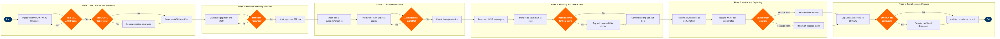

| Step | L4 Step Name | KPI / Target | Pain Point / Risk | Gate |
|---|---|---|---|---|
| 1.1 | Ingest WCHR/WCHC/WCHS/WCHB SSR codes from PNR | SSR capture rate ≥99% of passengers self-identifying as requiring assistance | SSR codes entered via third-party OTA bookings (Sabre/Travelport GDS) frequently omit WCHR detail level — WCHR vs WCHC vs WCHB require different staffing and equipment, forcing manual re-verification at check-in | |
| 1.2 | Validate SSR codes against IATA AIRIMP definitions | SSR validation accuracy ≥98% completed ≥24 hours before scheduled departure | WCHR (ambulatory, needs chair to/from aircraft), WCHC (immobile), WCHB (on-board transfer only), WCHS (steps only) have distinct handling requirements — conflation causes resource misallocation and DOT ACAA exposure | ⚠ |
| 1.3 | Flag MEDA/OXYG/LEGL cases for medical clearance | Medical clearance decision issued ≤4 hours before departure; MEDA clearance rate tracked monthly | MEDA cases require physician sign-off via MedAire or equivalent — no standardised PSS-to-medical portal API; clearance requests are manual email/phone, creating decision latency that can strand medically complex passengers | ⚠ |
| 2.1 | Generate special assistance manifest for flight | Manifest accuracy ≥97% verified at gate against actual presenting passengers | Real-time SSR updates from late bookers and day-of upgrades are not always pushed from Altéa to SITA AMS — agents frequently work off stale manifests, missing newly added WCHR requests | |
| 2.2 | Allocate wheelchair equipment and trained staff | WCHR equipment availability ≥99.5% at departure time; staff-to-WCHR ratio ≥1:3 | Shared wheelchair pool across concurrent bank departures causes equipment shortfalls — no real-time IoT tracking of wheelchair/aisle chair location at most airports; agents spend 10–15 min locating equipment | ⚠ |
| 2.3 | Brief check-in, gate, and lounge staff on SSR pax | Briefing completion ≥90 minutes before scheduled departure for all WCHR flights | High turnover in ground handling contractor staff means briefings are the primary knowledge transfer channel — no structured digital briefing delivery to ramp contractor teams; verbal-only handoffs cause information loss at shift changes | |
| 3.1 | Meet and greet passenger at curbside or check-in | Meet-and-greet wait time ≤5 minutes from passenger arrival notification; missed meet rate <1% | No reliable mechanism for passengers to pre-notify airport of their actual arrival time — agents use scheduled departure window as proxy, causing missed meets for passengers arriving >90 min early or late | |
| 3.2 | Process priority check-in and accessible seat assignment | Priority check-in processing time ≤10 minutes; accessible seat assignment compliance ≥100% | Altéa seat maps do not surface DOT Part 382-mandated accessible seats (bulkhead with movable armrests) separately from general inventory — agents must manually cross-check airline accessible seating policy to avoid assigning window or obstructed seats | ⚠ |
| 3.3 | Escort passenger through security checkpoint | Security escort completion ≤20 minutes; extended screening incidents <5% of WCHR escorts | TSA screening of power wheelchairs with lithium batteries (>300Wh) triggers extended secondary screening — no pre-clearance pathway between airline SSR data and TSA PreCheck; battery removal for screening adds 15–20 minutes and requires specialised TSA training | |
| 4.1 | Pre-board WCHR passengers ahead of general boarding | Pre-boarding initiation ≥20 minutes before scheduled departure; WCHR pre-board completion rate ≥98% | Gate changes issued via Amadeus AMS real-time updates do not automatically trigger re-dispatch of staged WCHR escort teams — agents must manually monitor FIDS for gate swaps, causing missed pre-boards when late gate changes occur | |
| 4.2 | Transfer passenger to aisle chair at jet bridge threshold | Aisle chair transfer completion ≤8 minutes per passenger; transfer injury rate 0% | Narrow-body aircraft (737, A320 family) require airline-specific aisle chair dimensions — third-party ground handling company equipment is frequently incompatible; DOT Air Carrier Access Act mandates two trained staff for transfers, but solo escorts are common at smaller stations | ⚠ |
| 4.3 | Tag, stow, or gate-check personal mobility device | Mobility device stow without damage ≥99.8%; aircraft-door return ≥90% of WCHC/WCHB cases | Power wheelchair lithium batteries >300Wh require IATA DGR Section 3.3.1 special handling — ramp agents are not universally IATA DGR certified; battery removal adds 15–20 min dwell time and risks damage to chair electronics if improperly handled | ⚠ |
| 4.4 | Confirm seating, call bell, and lavatory access briefing | Passenger safety and accessibility briefing completion 100% before door close | Single-aisle narrow-body aircraft (737-800, A320) have no onboard accessible lavatory — WCHR passengers on sectors >3 hours require a pre-departure lavatory visit; this is frequently omitted when boarding is behind schedule, resulting in DOT ACAA complaints | |
| 5.1 | Transmit WCHR count and SSR detail to destination station | SSR transmission to destination ≥60 minutes before ETA; message accuracy ≥99% | Not all carriers use structured IATA AHM 140 (PRM advice) messaging — some destination stations rely on informal teletype or email, causing missed meet-and-greets at remote or outstations with minimal ground handling staff | |
| 5.2 | Deplane WCHR passengers in coordinated sequence | WCHR deplaning completion within 15 minutes of blocks-on; missed assist rate <0.5% of WCHR arrivals | Remote stands (bus gates) require two-stage transfer: aisle chair → ambulift → terminal wheelchair — ambulift availability is not tracked in SITA AMS; unplanned remote stand assignments cause 20–30 min assistance delays and DOT ACAA complaint exposure | ⚠ |
| 5.3 | Return mobility device at aircraft door or baggage claim | Device return at aircraft door ≥90% (DOT ACAA requirement); mobility device damage rate <0.1 per 1,000 devices handled | DOT Air Carrier Access Act requires power wheelchair return at aircraft door — carriers routinely return at baggage claim due to cargo door sequencing constraints; each violation exposes the carrier to DOT fines of up to $35,000 per incident | ⚠ |
| 6.1 | Log completed assistance events in SITA AMS | Assistance event logging rate ≥99% within 30 minutes of flight departure or arrival blocks-on | Manual data entry creates compliance gaps — paper-based backup processes at smaller outstations mean event logs are incomplete; data aggregation for monthly DOT Part 382 reporting requires manual reconciliation across 8–12 station formats | |
| 6.2 | Audit DOT Part 382 / ACAA compliance metrics | DOT ACAA complaint rate <0.5 per 10,000 passengers; mobility device damage claims <0.1%; complaint resolution within 30 days ≥95% | DOT Part 382 requires individual written complaint response within 30 days — complaint tracking spans CX, legal, and ground ops with no single integrated system; manual status reconciliation between Salesforce CRM and SITA AMS takes 2–3 hours per month per station | ⚠ |
| 6.3 | Escalate unresolved complaints to CX and Regulatory Affairs | Complaint resolution within 30 days ≥95% (DOT Part 382 §382.155 requirement); repeat incident rate reduction target ≥20% quarter-over-quarter | No direct integration between SITA AMS ground ops incident logs and Salesforce CRM — staff must manually recreate incident context in Salesforce tickets, causing information loss and duplicate investigative effort; recurring root causes (e.g. remote stand ambulift gaps) are not systematically fed back into resource planning |